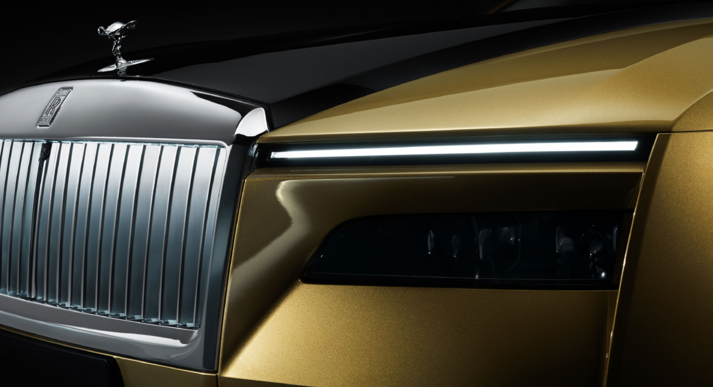
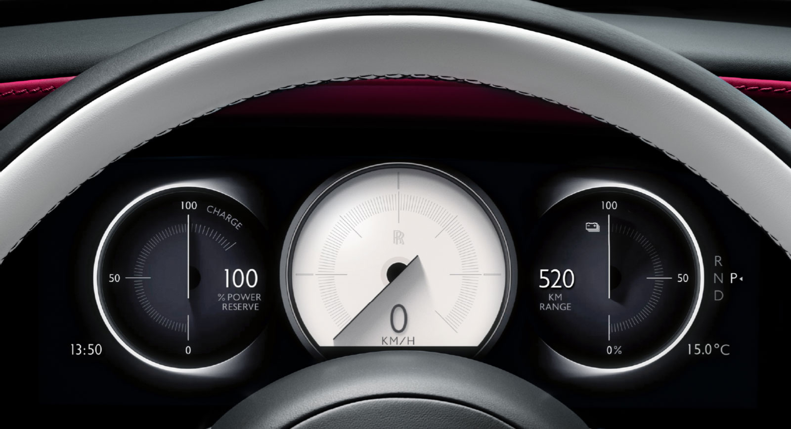
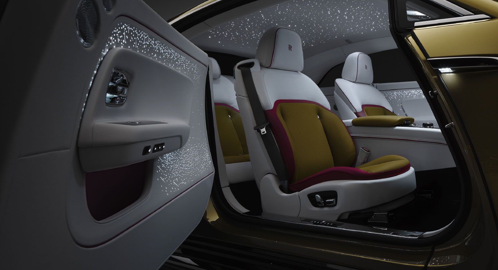

<!DOCTYPE html>
<html lang="ko">

<head>
    <meta charset="UTF-8">
    <meta http-equiv="X-UA-Compatible" content="IE=edge">
    <meta name="viewport" content="width=device-width, initial-scale=1.0">
    <title>rolls-royce</title>
    <link rel="stylesheet" href="./css/mainCss.css">
</head>

<body style="margin: 0 auto;">
    <navbar>
        <a href="./index.html"></a>
        <a href="./maserati.html"></a>
        <a href="./porsche.html"></a>
    </navbar>
    

    <div class="text" id="fade">
        <h1>현실이 된 예언. 전기화된 정신.</h1>
        <p>
            간결해진 환희의 여신상은 위풍당당한 모습으로 SPECTRE를 리드합니다. 우리의 아키텍처 오브 럭셔리를 기반으로 만들어진 SPECTRE는 지금까지 중 가장 강력하고 가장 공기 역학적인 롤스로이스로, 
            차체의 모든 라인은 궁극의 우아함과 퍼포먼스를 위해 그려졌습니다. 마음을 사로잡는 주행 경험. 그 무엇과도 비교할 수 없는 럭셔리의 기준.
        </p>
    </div>


    <div style="height: 500px;"></div>
    <div class="text" id="fade">
        <h1>자연스러운 퍼포먼스. 선구적인 정신. 럭셔리의 새로운 표현</h1>
        <p>
            SPECTRE는 롤스로이스가 2030년까지 전 모델 포트폴리오를 전기화 시키는 새로운 전기의 세계로 선두의 위치에서 들어갈 수 있게 해 줍니다. 
            선구적인 디자인은 시간이 지나도 변치 않을 아이콘을 재창조함으로써 롤스로이스의 순수 전기 시대를 향한 명확한 길을 열어줍니다.
        </p>
    </div>
    <div class="imgText" id="fade">
        
        <div style="margin: 3%;">
            <h3>아이코닉한 헤드라이트</h3>
            <p>롤스로이스의 아이코닉한 분리된 헤드라이트는 SPECTRE의 영혼적 전신이라 할 수 있는 팬텀 쿠페 이후에는 볼 수 없었습니다. SPECTRE는 상부의 주간주행등과 앞 길을 환하게 비춰주는
                하부의 4-램프 클러스터, 이 2가지 요소로 독창적이고 시선을 사로잡는 디자인을 이어가고 있습니다.</p>
        </div>
    </div>


    <div class="text" id="fade">
        <h1>엄청난 지능을 갖춘 전기차</h1>
        <p>
            직관적이고 지각이 있으며 예리한SPECTRE는 지금까지 중 가장 지능적인 롤스로이스입니다. 141,200개의 송수진 기능과 7km에 달하는 케이블링, 
            25,000가지가 넘는 하위 기능을 통해 복잡한 데이터를 처리하고 디테일한 정보를 교환할 수 있는 능력을 갖추게 되었습니다. SPECTRE에는 이 차의 
            우수한 지능을 잘 보여주는 운전자 보조 시스템이 10가지 넘게 적용되었으며 , 이를 통해 부드럽고 안전한 주행을 가능하게 합니다.
        </p>
    </div>
    <div class="imgText" id="fade">
        
        <div style="margin: 3%;">
            <h3>비스포크 인스트루먼트 다이얼</h3>
            <p>
                롤스로이스에 최초로 적용된 풀 디지털 비스포크 인스트루먼트 다이얼은 SPECTRE의 디지털 정체성과 롤스로이스의 독보적인 디자인 역량을 잘 보여주는 기술적 장인정신의 집합체입니다. 
                SPECTRE 오너분들은 개인 맞춤화된 보완적인 다이얼 색상을 주문 시 선택할 수 있습니다. 운전석에서 보는 뷰를 현대화 시켜주는 이 다이얼의 핸즈는 반짝이는 별들로 장식되어 스타라이트 도어, 
                스타라이트 헤드라이너 그리고 일루미네이티드 패시아와의 연결성을 선사합니다.
            </p>
        </div>
    </div>

    <div class="text" id="fade">
        <h1>럭셔리한 세련됨과 사려 깊은 디자인</h1>
        <p>SPECTRE는 눈부시게 우아함 실내 디자인, 정교한 장인정신, 놀라움을 자아내는 기능과 최고의 편안함으로 모든 기대를 능가합니다.</p>
    </div>
    <div class="imgText" id="fade">
        
        <div style="margin: 3%;">
            <h3>천상으로의 입장</h3>
            <p>
                마음을 사로잡는 실내 옵션인 스타라이트 도어 (Starlight Doors)는 뒤에서 빛을 내는 4,796개의 천공을 통해 빛을 발합니다. 
                모든 ‘별’들은 수작업으로 자리를 잡아 SPECTRE의 실내에서 은은한 움직임을 만들어 냅니다. 이 별빛은 스타라이트 헤드라이너와 일루미네이티드 
                패시아와 함께 아름다운 심포니를 만들어 별빛에 둘러 싸인 듯한 몰입감 있는 360도 경험을 선사합니다.
            </p>
        </div>
    </div>

</body>

<script src="./js/mainjs.js"></script>

</html>